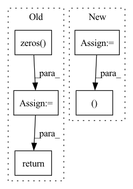

Pattern ID :956
Before Change
device = torch.device("cuda") if torch.cuda.is_available() else torch.device("cpu")
batch_size = anchor_output.shape[0]
targets_sketch = torch.zeros(batch_size)
targets_photos = torch.zeros( batch_size)
if epoch < 5:
lmbda = 0
elif epoch < 25:
lmbda = (epoch-5)/20.0
else:
lmbda = 1.0
loss_domain = self.domain_loss(grad_reverse(anchor_output, lmbda), targets_sketch) + self.domain_loss(grad_reverse(positive_output, lmbda), targets_photos) + self.domain_loss(grad_reverse(negative_output, lmbda), targets_photos)
loss_domain /= 3.0
total_loss = self.w_dom * loss_domain + self.w_sem * loss_semantic + self.w_triplet * loss_triplet // Our network minimizes this loss
return total_loss
After Change
device = torch.device("cuda") if torch.cuda.is_available() else torch.device("cpu")
batch_size = anchor_output.shape[0]
targets_sketch = torch.zeros(batch_size)
targets_photos = torch.ones(batch_size)
if epoch < 5:
lmbda = 0
elif epoch < 25:
lmbda = (epoch-5)/20.0
else:
lmbda = 1.0
loss_domain = self.domain_loss(grad_reverse(anchor_output, lmbda), targets_sketch) + self.domain_loss(grad_reverse(positive_output, lmbda), targets_photos) + self.domain_loss(grad_reverse(negative_output, lmbda), targets_photos)
loss_domain /= 3.0
total_loss = self.w_dom * loss_domain + self.w_sem * loss_semantic + self.w_triplet * loss_triplet // Our network minimizes this loss
return total_loss, loss_domain, loss_triplet, loss_semantic
In pattern: SUPERPATTERN
Frequency: 3
Non-data size: 5
Instances Fragment ID: 3479637
Project Name: ashok-arjun/zero-shot-sketch-based-image-retrieval
Commit Name: 408fd9d1d064dfa075be91fb92f8cbac8001eec4
Time: 2020-07-31
Author: arjun2000ashok@gmail.com
File Name: model/loss.py
M Class Name: DetangledJointDomainLoss
N Class Name: DetangledJointDomainLoss
M Method Name: forward(6)
N Method Name: forward(6)
M Parent Class: nn.Module
N Parent Class: nn.Module
M File Name: model/loss.py
N File Name: model/loss.py
M Start Line: 112
M End Line: 130
N Start Line: 106
N End Line: 130
Before Change
dec_enc_attns.append(dec_enc_attn)
predictions = self.projection(dec_outputs)
// TODO: 暂时全部为0, return dec_self_attns, dec_enc_attns
alphas = torch.tensor(np.zeros( (batch_size, 52, 196)) ).to(device)
return predictions, encoded_captions, decode_lengths, alphas, sort_ind
class EncoderLayer(nn.Module):
After Change
// 0 0 0 0 1 2
// 0 0 0 0 1 1
dec_outputs = self.tgt_emb(encoded_captions) + self.pos_emb(torch.LongTensor([list(range(52))]*batch_size).to(device))
dec_outputs = self.dropout(dec_outputs)
dec_self_attn_pad_mask = self.get_attn_pad_mask(encoded_captions, encoded_captions)
dec_self_attn_subsequent_mask = self.get_attn_subsequent_mask(encoded_captions)
dec_self_attn_mask = torch.gt((dec_self_attn_pad_mask + dec_self_attn_subsequent_mask), 0)
dec_enc_attn_mask = (torch.tensor(np.zeros((batch_size, 52, 196))).to(device) == torch.tensor(np.ones((batch_size, 52, 196))).to(device))
dec_self_attns, dec_enc_attns = [], []
for layer in self.layers:
// attn: [batch_size, n_heads, len_q, len_k]
dec_outputs, dec_self_attn, dec_enc_attn = layer(dec_outputs, encoder_out, dec_self_attn_mask, dec_enc_attn_mask)
dec_self_attns.append(dec_self_attn)
dec_enc_attns.append(dec_enc_attn)
predictions = self.projection(dec_outputs)
return predictions, encoded_captions, decode_lengths, sort_ind, dec_self_attns, dec_enc_attns
class EncoderLayer(nn.Module):
Fragment ID: 3479636
Project Name: royalskye/image-caption
Commit Name: 569502dd85be28a1e6a10bc8873b7cd0446556b8
Time: 2020-04-06
Author: a19970417b@qq.com
File Name: transformer.py
M Class Name: Decoder
N Class Name: Decoder
M Method Name: forward(4)
N Method Name: forward(4)
M Parent Class: nn.Module
N Parent Class: nn.Module
M File Name: transformer.py
N File Name: transformer.py
M Start Line: 150
M End Line: 189
N Start Line: 160
N End Line: 191
Before Change
)
// Handle the case of no hidden state provided
if hx is None:
hx = torch.zeros( input.size(0), self.h_channels, output_size, device=input.device)
// Run the optimized convgru-cell
return _opt_convgrucell_1d(
input,
hx,
self.h_channels,After Change
def forward(self, input, h_prev=None):
// init hidden on forward
if h_prev is None:
h_prev = self.init_hidden(input)
print(f"input: {input.shape} prev: {h_prev.shape}")
combined = torch.cat((input, h_prev ), dim=1) // concatenate along channel axis
combined_conv = F.sigmoid(self.conv_zr(combined))
Fragment ID: 3479639
Project Name: openclimatefix/skillful_nowcasting
Commit Name: 02c5ceadd01484d6ac8bce848ff76446fe7a6917
Time: 2021-10-18
Author: jacob@bieker.tech
File Name: nowcasting_gan/layers/ConvGRU.py
M Class Name: ConvGRU1DCell
N Class Name: ConvGRUCell
M Method Name: forward(3)
N Method Name: forward(3)
M Parent Class: nn.Module
N Parent Class: nn.Module
M File Name: nowcasting_gan/layers/ConvGRU.py
N File Name: nowcasting_gan/layers/ConvGRU.py
M Start Line: 83
M End Line: 101
N Start Line: 69
N End Line: 82